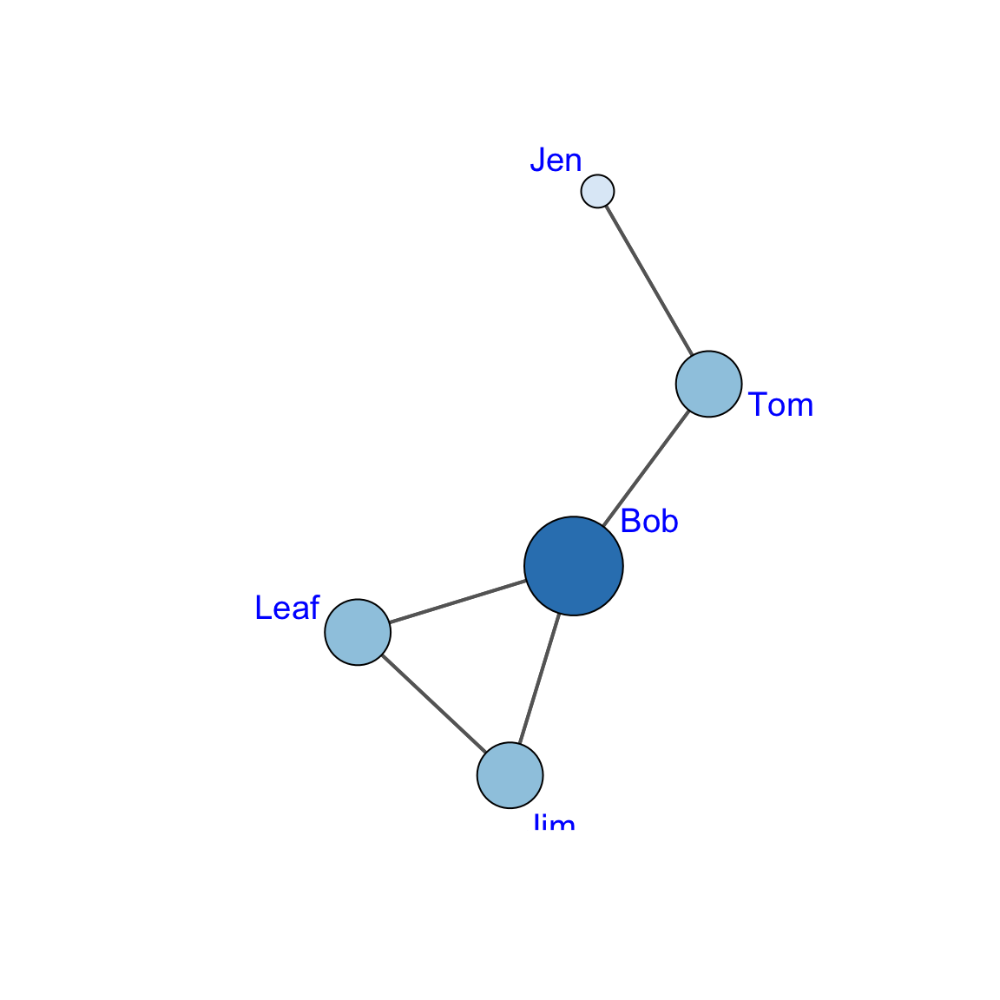
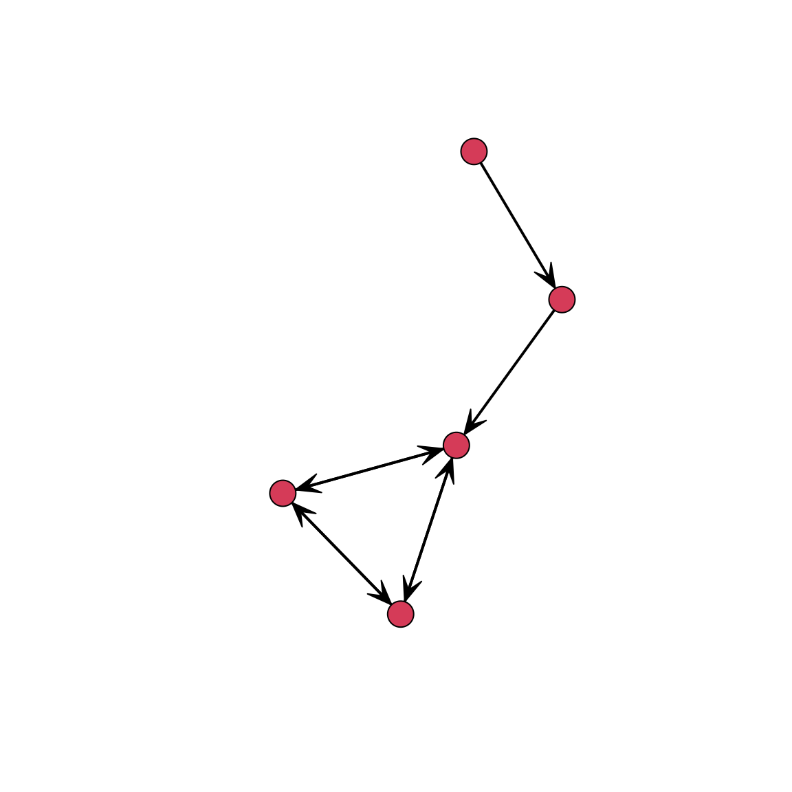
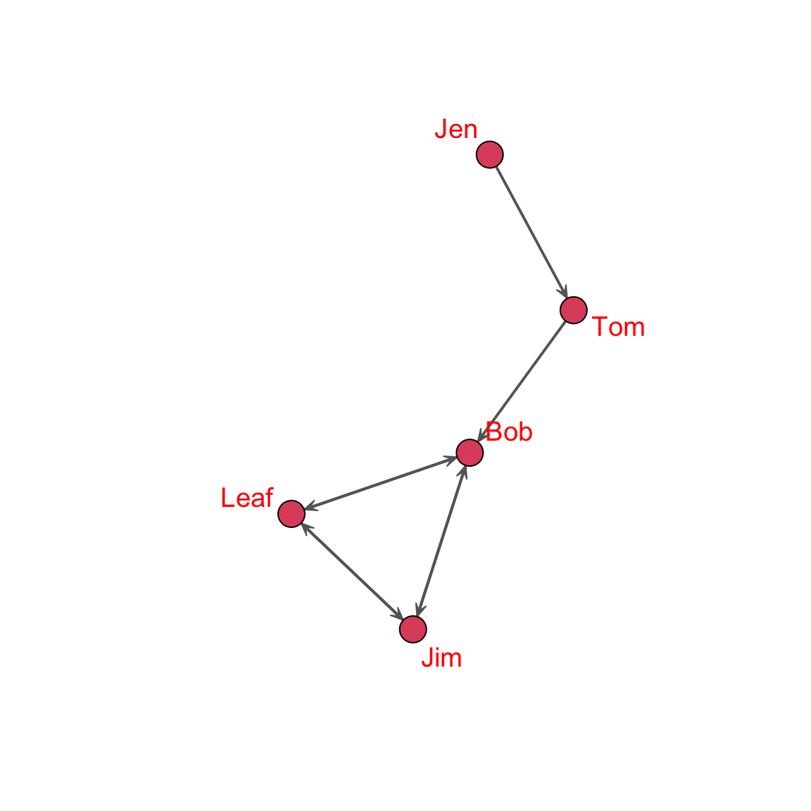

How do we know whether a node is important in a network? As was discussed in the textbook chapter on Degree Centrality, one of the most popular concepts in network analysis is centrality. That is, important nodes are those who are central. Also, we can compare networks by examining how they differ (or are similar) based on the distribution of centrality scores. In this lab, we will examine how to calculate degree centrality and centralization scores in R using the degree() and centralization() functions in the sna package.
Degree Centrality (Undirected Binary Graphs)
In an undirected binary graph, actor degree centrality measures the extent to which a node connects to all other nodes in a network. In other words, the number of edges incident with a node. This is symbolized as: \(d(n_i)\). For an undirected binary graph, the degree \(d(n_i)\) is the row or column sum. If we have an object of class(matrix) in the workspace, we can use the colSums() and/or rowSums() functions to return this information.
First, let’s set up our graph from the degree centrality chapter:
# First, clear the workspacerm( list =ls() )# Then, build an objectu_mat <-rbind(c( 0,1,0,0,0 ),c( 1,0,1,0,0 ),c( 0,1,0,1,1 ),c( 0,0,1,0,1 ),c( 0,0,1,1,0 ) )# Assign the names to the objectrownames( u_mat ) <-c( "Jen","Tom","Bob","Leaf","Jim" )colnames( u_mat ) <-c( "Jen","Tom","Bob","Leaf","Jim" )# Now, plot the graph (remember to load the sna package)# The quitely= argument tells R not to print out the info on the packagelibrary( sna, quietly=TRUE ) # Let's set up the coordinates to force the nodes# to be in the same position throughout the labset.seed( 507 )coords <-gplot( u_mat )
Since the graph is undirected, we can print the degree centrality for each node as a vector using the colSums() or rowSums() functions:
colSums( u_mat )
Jen Tom Bob Leaf Jim
1 2 3 2 2
rowSums( u_mat )
Jen Tom Bob Leaf Jim
1 2 3 2 2
# We could also assign these to an objectdeg_u_mat <-colSums( u_mat )
Then, we can use that information in the plot by passing the degree object to the vertex.cex= argument. This will make nodes with higher degree larger.
gplot( u_mat,gmode="graph", arrowhead.cex=0.5, edge.col="grey40", label=rownames( u_mat ),label.col="blue",label.cex=1.2,vertex.cex = deg_u_mat, #HERE: we added the object to size the plotcoord = coords )
Another approach is to shade the nodes. Rather than just the size, we might want to have nodes with larger degree to be darker (or lighter) to better visualize differences in degree. To do this, we could use the RColorBrewer package to shade the nodes.
# install.packages( "RColorBrewer" )library( RColorBrewer, quietly=TRUE )# use display.brewer.all() to see the pallettes.# Let's use the Blues pallette.col_deg <-brewer.pal( length( unique( deg_u_mat ) ), "Blues")[deg_u_mat]# In this plot, what do darker shades mean?gplot( u_mat, gmode="graph", arrowhead.cex=0.5, edge.col="grey40", label=rownames( u_mat ),label.col="blue",label.cex=1.2,vertex.cex = deg_u_mat,vertex.col = col_deg,coord = coords )

Standardized degree centrality, mean degree, and centralization
Actor degree centrality not only reflects each node’s connectivity to other nodes but also depends on the size of the network, g. As a result, larger networks will have a higher maximum possible degree centrality values. This makes comparison across networks problematic. The solution is to take into account the number of nodes and the maximum possible nodes to which i could be connected, g-1.
Let’s calculate the standardized centrality scores for our undirected graph:
# unstandardized or raw centralitydeg_u_mat <-colSums( u_mat )# to calculate g-1, we need to know the number of nodes in the graph # this is the first dimension of the matrixg <-dim( u_mat )[1]# now, divide by g-1s_deg_u_mat <- deg_u_mat / ( g-1 )deg_u_mat
Jen Tom Bob Leaf Jim
1 2 3 2 2
s_deg_u_mat
Jen Tom Bob Leaf Jim
0.25 0.50 0.75 0.50 0.50
We can also examine the average degree of the graph using
# Note that we can also use the mean() function to return this information:mean( deg_u_mat )
[1] 2
We can also calculate how centralized the graph itself is. Group degree centralization measures the extent to which the actors in a social network differ from one another in their individual degree centralities. Following Wasserman & Faust (1994), an index of group degree centralization can be calculated as:
# Or, as a single equation.group_deg_cent <-( sum( ( ( max( deg_u_mat ) - deg_u_mat ) ) ) ) / ( ( g -1 )*( g -2 ) )group_deg_cent
[1] 0.4166667
Degree Centrality (Directed Binary Graphs)
In a directed binary graph, actor degree centrality can be broken down into indegree and outdegree centrality. Indegree, \(C_I(n_i)\), measures the number of ties that i receives. For the sociomatrix \(Xij\), the indegree for i is the column sum. Outdegree, \(C_O(n_i)\), measures the number of ties that i sends. For the sociomatrix \(Xij\), the outdegree for i is the row sum.
As before, if we have an object of class(matrix) in the workspace, we can use the rowSums() and colSums() functions. However, the colSums() function will return the indegree centrality for i and the rowSums() function will return the outdegree centrality for i.
First, let’s set up our directed graph from the degree centrality lecture:
# First, clear the workspacerm( list =ls() )# Then, build the objectd_mat <-rbind(c( 0,1,0,0,0 ),c( 0,0,1,0,0 ),c( 0,0,0,1,1 ),c( 0,0,1,0,1 ),c( 0,0,1,1,0 ) )rownames( d_mat ) <-c( "Jen","Tom","Bob","Leaf","Jim" )colnames( d_mat ) <-c( "Jen","Tom","Bob","Leaf","Jim" )# Let's set up the coordinates to force the nodes# to be in the same position throughout the labset.seed( 507 )# remove the old object named coordsrm( coords )# set the new coordinatescoords <-gplot( d_mat )

# Now, plot the graph (remember to load the sna package)gplot( d_mat, gmode="digraph",arrowhead.cex=0.5, edge.col="grey40", label=rownames( d_mat ),label.col="red",label.cex=1.2,coord = coords )

# Let's look at the different centrality scores # by assigning them to different objectsideg_d_mat <-colSums( d_mat )odeg_d_mat <-rowSums( d_mat )# print them out to examine themideg_d_mat
Jen Tom Bob Leaf Jim
0 1 3 2 2
odeg_d_mat
Jen Tom Bob Leaf Jim
1 1 2 2 2
Now, let’s work this information in the plot. We will want to partition the plotting window using the par() function to show two plots and we want to change the margins using the mar= argument. Use ?par and/or ?mar to view the help on how these work.
Standardized degree centrality, mean degree, and centralization
Let’s calculate the standardized centrality scores for our directed graph:
# unstandardized or raw centralityideg_d_mat <-colSums( d_mat )odeg_d_mat <-rowSums( d_mat )# to calculate g-1, we need to know the number of nodes in the graph# this is the first dimension of the matrixg <-dim( d_mat )[1]# now, divide by g-1s_i_deg_u_mat <- ideg_d_mat / ( g-1 )s_o_deg_u_mat <- odeg_d_mat / ( g-1 )
We can also examine the average degree of the graph using \(\frac{\sum_{i=1}^g C_I(n_i)}{g} = \frac{\sum_{i=1}^g C_O(n_i)}{g}\) or \(\frac{L}{g}\), where L is the number of edges in the graph:
for undirected graphs where \(C_D(n^*)\) is the maximum indegree/outdegree in the graph. We can write out the components of the equation using the max() function:
# Or, as a single equationgroup_i_deg_cent <-( sum( ( ( max( ideg_d_mat ) - ideg_d_mat ) ) ) ) / ( ( g -1 )*( g -1) )group_o_deg_cent <-( sum( ( ( max( odeg_d_mat ) - odeg_d_mat ) ) ) ) / ( ( g -1 )*( g -1 ) )group_i_deg_cent
[1] 0.4375
group_o_deg_cent
[1] 0.125
What do the centralization scores tell us, conceptually?
Degree Centrality using the sna Package
Did that feel tedious? If no, go back and do it again :)
As you probably have guessed, there are functions in the sna package that calculate degree centrality and graph centralization! In the sna package, these are the degree() and centralization() functions, respectively. Let’s take a look at how these work.
# load the librarylibrary( sna )# Build the objects to work withrm( list =ls() )u_mat <-rbind( c( 0,1,0,0,0 ),c( 1,0,1,0,0 ), c( 0,1,0,1,1 ), c( 0,0,1,0,1 ), c( 0,0,1,1,0 ) )rownames( u_mat ) <-c( "Jen","Tom","Bob","Leaf","Jim" )colnames( u_mat ) <-c( "Jen","Tom","Bob","Leaf","Jim" )d_mat <-rbind(c( 0,1,0,0,0 ),c( 0,0,1,0,0 ), c( 0,0,0,1,1 ), c( 0,0,1,0,1 ), c( 0,0,1,1,0 ) )rownames( d_mat ) <-c( "Jen","Tom","Bob","Leaf","Jim" )colnames( d_mat ) <-c( "Jen","Tom","Bob","Leaf","Jim" )# First, let's look at degree?degree# degree for undirected graphdeg <-degree( u_mat, gmode="graph" )# indegree for directed graphideg <-degree( d_mat, gmode="digraph", cmode="indegree" )# outdegree for directed graphodeg <-degree( d_mat, gmode="digraph", cmode="outdegree" )# returns the combined centrality for each nodedeg_d <-degree( d_mat, gmode="digraph" )# Now, let's look at centralization?centralization# degree centralization for undirected graphcent_u <-centralization( u_mat, degree, mode="graph" )# indegree centralization for directed graph.i_cent_d <-centralization( d_mat, degree, mode="digraph", cmode="indegree" ) # outdegree centralization for directed graph.o_cent_d <-centralization( d_mat, degree, mode="digraph", cmode="outdegree" )
Now, wasn’t that easier?
Degree Centrality in PINS Get Along With and Power/Influence Networks
The Prison Inmate Networks Study (PINS) examines the social networks of prison inmates in a state correctional institution. The study was unique in that it was the first in nearly a century to collection sociometric data in a prison. The researchers collected data on several types of networks. There are two we want to look at here:
The get along with network was created by asking individuals whom they “get along with” on the unit. We can think of this as “friends” in a prison setting. (People don’t really have “friends” in prison, but there are people they “get along with”)
The power and influence network was created by asking individuals whom they believed was “powerful and influential” on the unit.
Let’s examine the degree centrality scores for both of these networks.
Get Along With Network (Undirected Network)
For the get along with network, individuals could have asymmetric nominations. That is, i could nominate j and j didn’t necessarily nominate i. But, we are going to symmetrize the network by only taking ties for which bothi and j indicated that the get along with the other person. This will give us an undirected network.
# set the location for the fileloc <-"https://github.com/jacobtnyoung/snaca-r/raw/main/data/data-PINS-getalong-w1-adj.csv"# read in the .csv filega_mat <-as.matrix(read.csv( loc,as.is =TRUE,header =TRUE,row.names =1 ) )# use the symmetrize() function to create an undirected matrixga_mat_u <-symmetrize( ga_mat, rule ="strong" )# create the network objectga_net_u <-as.network( ga_mat_u, directed =FALSE )
Now we have created an undirected network where ties represent “get along with” nominations from both individuals. Let’s calculate the degree centrality scores, the centralization score, and then use the degree centrality scores to size our nodes in a plot using the vertex.cex() argument in the gplot() function.
# Set the coordinatesset.seed( 507 )coords <-gplot( ga_net_u )
Now lets build the objects and the plot:
# get the degrees.ga_net_deg <-degree( ga_net_u, gmode="graph" )# now the centralization score.ga_net_deg_cent <-centralization( ga_net_u, degree, mode="graph" )# Now, take a look at the plot.gplot( ga_net_u, gmode ="graph",edge.col="grey40", vertex.col="#3250a8",vertex.cex = ga_net_deg,coord = coords,main ="PINS Get\n Along With Network (Undirected)",sub ="node sized by degree centrality" )
Woops! Let’s try that again AFTER rescaling the degree. We can use the rescale() function to do this.
Now we can plot it after adding in the rescale() function to gplot():
# Now, take a look at the plot.gplot( ga_net_u, gmode ="graph",edge.col="grey40", vertex.col="#3250a8",vertex.cex =rescale( ga_net_deg, 0.2, 4 ),coord = coords,main ="PINS Get\n Along With Network (Undirected)",sub ="node sized by degree centrality" )
Almost there! Let’s drop the isolates to help with the size:
# Now, take a look at the plot.gplot( ga_net_u, gmode ="graph",edge.col="grey40", vertex.col="#3250a8",vertex.cex =rescale( ga_net_deg, 0.2, 4 ),displayisolates =FALSE,coord = coords,main ="PINS Get\n Along With Network (Undirected)",sub ="node sized by degree centrality" )
A few questions:
What do we see in the plot?
What does the degree centralization score of 0.04 indicate?
Power and Influence Network (Directed Network)
For the power and influence network, individuals could have asymmetric nominations. That is, i could nominate j and j didn’t necessarily nominate i. We will keep this asymmetry so that we can treat the network as directed.
# set the location for the fileloc <-"https://github.com/jacobtnyoung/snaca-r/raw/main/data/data-PINS-power-w1-adj.csv"# read in the .csv filepi_mat <-as.matrix(read.csv( loc,as.is =TRUE,header =TRUE,row.names =1 ) )# create the network objectpi_net_d <-as.network( pi_mat, directed =TRUE )
Now we have created an undirected network where ties represent “get along with” nominations from both individuals. Let’s calculate the degree centrality scores, the centralization score, and then use the degree centrality scores to size our nodes in a plot using the vertex.cex() argument in the gplot() function.
# Set the coordinatesset.seed( 507 )coords2 <-gplot( pi_net_d )
# get the degrees.pi_net_ideg <-degree( pi_net_d, gmode="digraph", cmode ="indegree" )pi_net_odeg <-degree( pi_net_d, gmode="digraph", cmode ="outdegree" )# now the centralization scores.pi_net_ideg_cent <-centralization( pi_net_d, degree, mode="digraph", cmode ="indegree" )pi_net_odeg_cent <-centralization( pi_net_d, degree, mode="digraph", cmode ="outdegree" )
What does the indegree centralization score of 0.07 indicate?
What does the outdegree centralization score of 0.04 indicate?
Test Your Knowledge Excercises
For the undirected binary graph u_mat, calculate the degree centrality for each node manually. Verify your results using the colSums() function. What does the degree centrality of each node represent in this network? Which node has the highest degree centrality? Why do you think this is the case?
In the example above, nodes were plotted with sizes proportional to their degree centrality. Using the shaded plot, describe the relationship between node size and shade intensity. Which node has the darkest shade? Explain what this represents in terms of degree centrality.
Calculate the standardized degree centrality for u_mat. How does standardizing degree centrality help in comparing nodes across networks of different sizes?
Compute the degree centralization for u_mat manually and verify it using the centralization() function. What does the result tell you about the network’s structure?
For the directed graph d_mat, compute both indegree and outdegree centrality for each node using colSums() and rowSums(). Plot the graph with nodes sized by indegree and outdegree separately. Which nodes are most central in terms of indegree? What does this imply about their role in the network? Which nodes are most central in terms of outdegree? What does this imply?
For the Get Along With network, describe the significance of symmetrizing the network. Interpret the degree centrality scores and the centralization score. What does the structure of this network suggest about relationships in the unit?
For the Power/Influence network, compare and contrast the plots sized by indegree and outdegree centrality. What do the indegree and outdegree centralization scores suggest about the distribution of power and influence in the network?
Compare the degree centralization scores for the undirected Get Along With network and the directed Power/Influence network. Which network is more centralized? How does the type of network (undirected vs. directed) influence the interpretation of centralization?
Tutorial Summary
This tutorial introduced the concept of degree centrality, a measure of node importance based on connectivity within a network, and explores its calculation and visualization for both undirected and directed graphs in R. For undirected graphs, degree centrality is computed using row or column sums, and standardized to account for network size. Directed graphs distinguish between indegree and outdegree centrality, reflecting incoming and outgoing connections, respectively. The tutorial demonstrated graph centralization, highlighting the variability in node centrality within a network. Visualization techniques, including node sizing and shading based on centrality scores, were covered, alongside practical applications using real-world data from the Prison Inmate Networks Study (PINS), where networks like “Get Along With” and “Power/Influence” are analyzed. The use of R’s sna package simplifies centrality calculations and graph plotting, enabling users to gain insights into the structure and dynamics of social networks.
Wasserman, Stanley, and Katherine Faust. 1994. Social Network Analysis: Methods and Applications. Vol. 8. Structural Analysis in the Social Sciences. Cambridge, UK: Cambridge University Press.